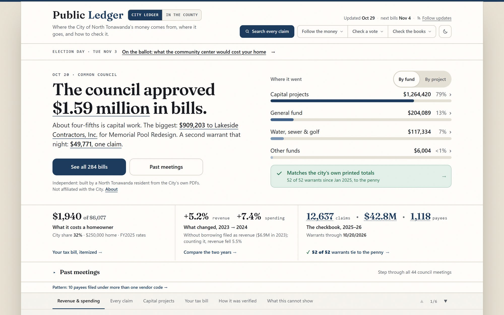

North Tonawanda’s checkbook, made checkable: every claim the council approved, parsed from the City’s own PDFs and tied to its printed totals.
12,637 approved claims · 52 of 52 council bill lists (warrants) tie to the penny · 67 questions flagged
How it was built
- The problem
- The City posts each council meeting’s bill list as a PDF: 52 of them across 2025 and 2026, six only as scanned images. No one could search them, total them or check them.
- My part
- All of it: the readers that pull every line out of the PDFs, the checks, the design and the writing, and the daily refresh.
- Decisions
- A document ships only when its lines add back to the totals printed on it. All 52 tie to the penny.
- Every line opens on its own page of the City’s PDF, with the line outlined.
- The words stay inside the record: approved claims, not payments; questions, not findings.
- What shipped
- The City’s spending, the County’s finances across 31 years, 6,105 County Legislature resolutions with their votes, a map of all 20 cities, towns and villages, and a report of 67 questions worth asking.
- Limits
- It shows what was approved and filed, not audited spending, and it is built from public records by a resident, independently.